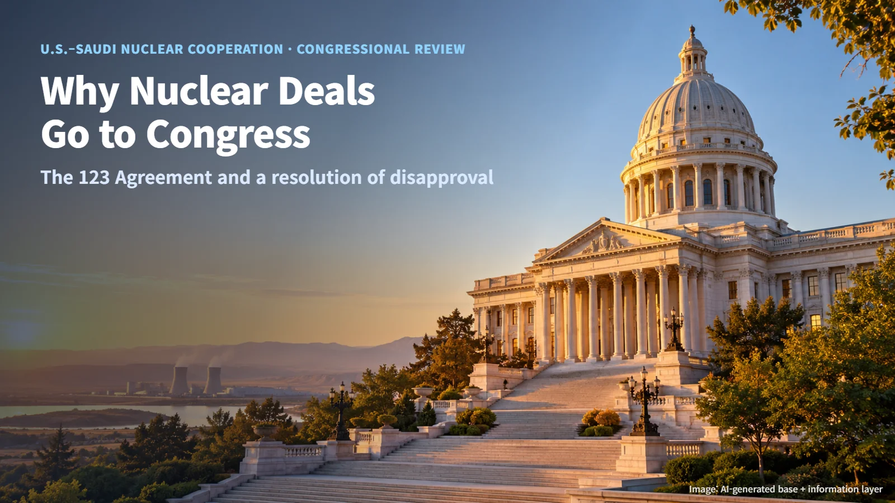
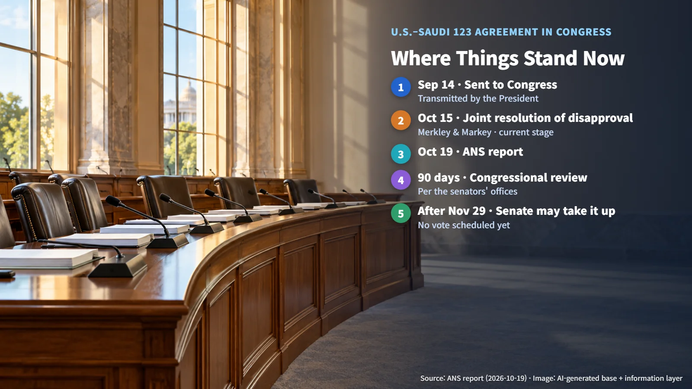

United States · Saudi Arabia · 123 Agreement
Why Does the U.S. Send Nuclear Agreements to Congress? The Resolution of Disapproval on the U.S.–Saudi 123 Agreement
Two senators have introduced a resolution to stop the U.S.–Saudi civil nuclear cooperation agreement from entering into force, putting the congressional review step of a 123 Agreement in the spotlight.
When two countries announce that they will cooperate on nuclear energy, it is easy to picture the work starting as soon as the governments sign. In the United States there is one more step in between: the text of the agreement goes to Congress and stays there for a set review period. Recently, two U.S. senators introduced a resolution aimed at stopping the U.S.–Saudi Arabia civil nuclear cooperation agreement from entering into force. Let's walk through why nuclear agreements pass through Congress, where this one stands today, and which steps remain.

The 123 Agreement: The Legal Gateway to Nuclear Cooperation
Before the United States can carry out civil nuclear cooperation with another country, the two sides first conclude a cooperation agreement. Because this agreement rests on Section 123 of the U.S. Atomic Energy Act, it is commonly called a 123 Agreement. The section number has simply become the agreement's nickname.
A 123 Agreement acts as the legal gateway for cooperation that involves the transfer of nuclear technology, equipment and nuclear material. Think of it as getting an access pass before entering a building: once the pass is issued, specific projects and transactions can follow inside. This pass takes effect after the executive branch prepares the agreement and Congress completes its review.
The U.S.–Saudi agreement is following the same path. On September 14, the President transmitted the agreement to Congress. An agreement sent by the President and now sitting on Congress's review desk is the starting point of the current situation.
The Resolution of Disapproval Introduced on October 15
On October 19, 2026, the American Nuclear Society (ANS) reported that Senators Jeff Merkley and Edward Markey had introduced a joint resolution of disapproval of the U.S.–Saudi civil nuclear cooperation agreement. The senators' offices first announced the move on October 15.
The resolution aims to block this cooperation agreement under Section 123 of the Atomic Energy Act from entering into force. The resolution text released by the senators' offices states opposition to the agreement the President transmitted to Congress on September 14. Picture two senators formally filing, in the Senate, a resolution that puts their objection to the agreement on the record.
The current stage is the introduction of the resolution. Introduction is the first step that formally places a measure before Congress; its fate is then decided through deliberation and a vote. In other words, the resolution now exists as an official item on the Senate's agenda, and the work of weighing it, debating it and voting on it still lies ahead. Whether the agreement takes effect will likewise be settled by the outcome of this congressional process.

The Issues: Enrichment, Reprocessing and the IAEA Additional Protocol
The points the senators raised can be summed up in three terms: enrichment, reprocessing and the IAEA Additional Protocol.
Enrichment is the process of raising the share of uranium-235, which makes up only a small fraction of natural uranium. It is the technology needed to make fuel for power reactors. Reprocessing is the process of chemically separating materials such as plutonium from spent fuel that has already been used in a reactor. Both are fuel-handling technologies, and depending on how far they are taken, they also connect to materials usable in nuclear weapons. That is why they rank as the most sensitive areas in nuclear nonproliferation discussions.
The IAEA Additional Protocol is an agreement that expands the authority of the safeguards inspections through which the International Atomic Energy Agency (IAEA) checks each country's nuclear material and facilities. If basic inspections are like entering through designated doors to verify what is there, the Additional Protocol widens the scope of places and information inspectors can check.
The senators raised concerns that this agreement falls short on commitments to forgo enrichment and reprocessing and on IAEA Additional Protocol requirements. This concern is a nonproliferation issue raised by the sponsors of the resolution. The specific conditions the agreement contains will become clearer as the executive branch and Congress release further official documents.
Next Steps: The 90-Day Review and Senate Consideration
The senators' offices explained that Congress has a 90-day review period for the agreement. They also mentioned that the Senate could take up the resolution after November 29. That date describes when consideration becomes possible; no vote has been scheduled. For readers following the story, the useful reference points are therefore the review period and the earliest window for Senate action, with the exact vote date still to be set.
Three things are worth watching from here. First, whether the resolution is taken up in the Senate and brought to a vote. Second, whether the executive branch and Congress release follow-up official documents on the agreement and the resolution. Third, how the conditions on enrichment, reprocessing and safeguards take concrete shape. Right now the picture is a congressional calendar with November 29 marked on it, and a wait to see whether the resolution reaches the Senate floor after that date.
How any cooperation linked to this agreement, such as reactor construction or fuel supply, moves forward can be judged once the results of this follow-up deliberation and the agreement's implementing conditions are known.
When you read news about nuclear cooperation, asking "which stage of the congressional process is the agreement in?" makes the same story far easier to read accurately. The procedure that sits between transmittal to Congress and entry into force will shape what comes next for the U.S.–Saudi agreement.